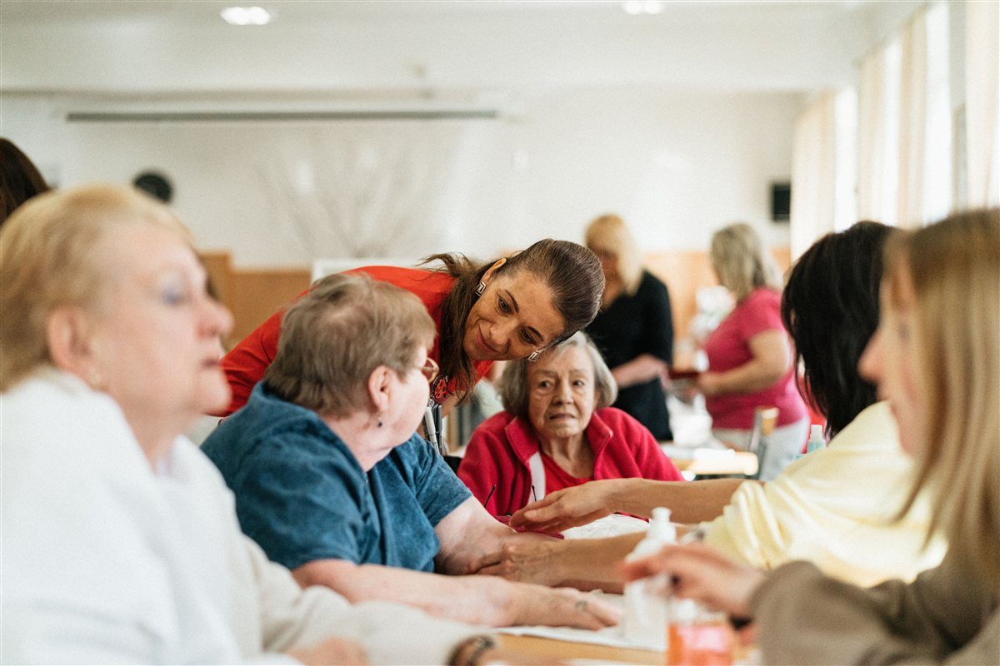
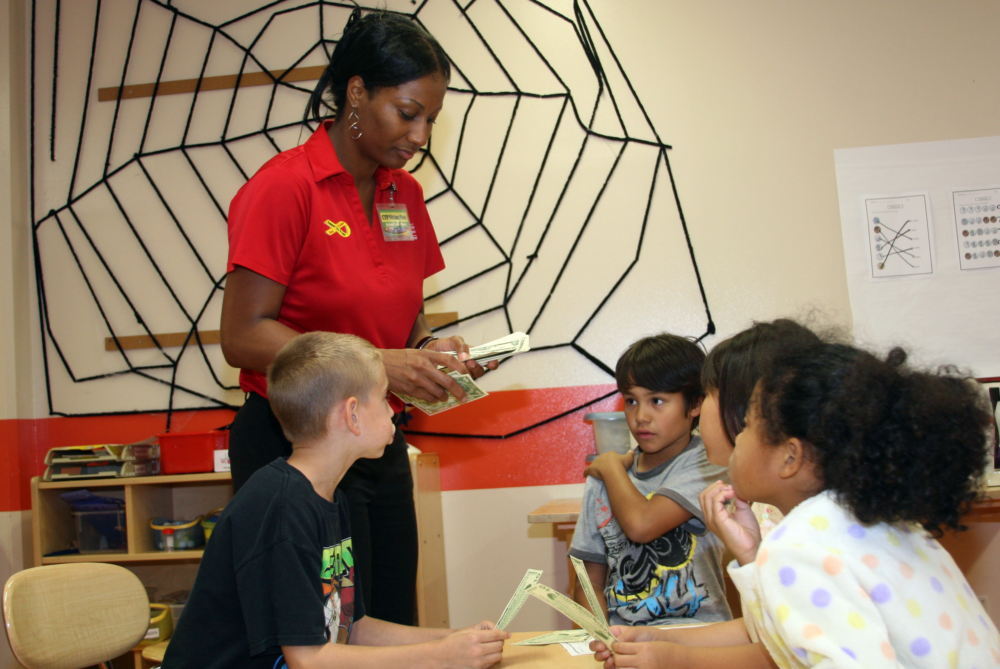

Caring for Caregivers
A bimonthly support group for caregivers to experience community, engage in information sharing and receive support.
Sign up for Caring for Caregivers on MeetupNorthern Virginia
We provide educational and social support to children, families and adults with disabilities in Northern Virginia.
A world where children and people living with disabilities are treated fairly, with care, and families have the supports they need to fulfill their dreams. Our vision
Who we are
To provide educational and social support to children, families and adults with disabilities in Northern Virginia.
We believe that every child needs a solid educational foundation, and every adult with a disability deserves a chance to live with dignity in their community.
Programs

A bimonthly support group for caregivers to experience community, engage in information sharing and receive support.
Sign up for Caring for Caregivers on Meetup
A quarterly initiative to train youth ages 8–12 in responsible financial management skills and raise awareness about investment opportunities. Designed for learners with differing abilities.
Read about Financial Literacy for YouthServices and resources
Caring for someone else rarely leaves room to look after yourself. These two services are built to take something off your plate.
Customized concierge support services for caregivers, built around a free consultation and a care plan shaped to your household.
A clearinghouse of state-based resources and links to caregiver support services, organized by state so you can find yours quickly.
Get involved
Join the caregivers who meet through Reformed Hope, or help us keep this work going for the families who need it.